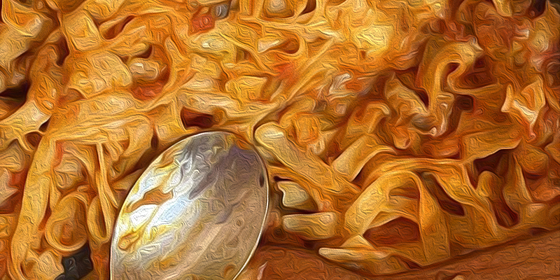

Itališki makaronai

Aprašymas
Jeigu šiektiek tyngi gamintis, nori dieviško skonio maisto, o gal tiesiog nori pasirodyt prieš antrą pusę, kad moki gaminti,
tada šis receptas tada kaip tik tau - Itališki makaronai
Lengvai pagaminami, skanūs bei sotūs.... Ko lauki? Einam gamint!
Ingredientai
- Vištiena
- Konservuoti lupti pomidorai
- Pasta
- Mocarella sūris
- "Česnakas
- Pievagrybiai
- Raudonoji Paprika (Nebūtinai)
- Bazilikas
- Jūsu megiami prieskoniai
Paruošimo būdas
- Susipjaustykite smulkiai vištiena ir užmarinuokite prieskoniuose, tada dėkite kepti ant mažos ugnies
- Vištienai kepant sudėkite makaronus į verdantį vandenį, svarbu kad būtu daug vandens
- Vištienai apkepus sudėkite česnaką bei pievagrybius, papriką. Palaukit kelias minutes
- Supilkites luptus pomidorus (Prieš tai svarbu juos sutrint), įberkite baziliko
- Kai padažas pradės virti, suberkite makaronus ir sumažinkite ugnį, įberkite jum norima kiekį sūrio.
Skanaus :)
Atgal į viršų
Grįžti į pradine svetaine